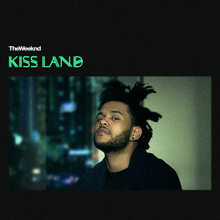
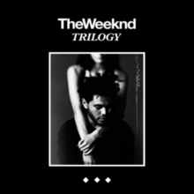
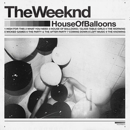
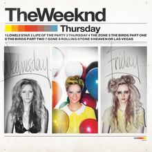
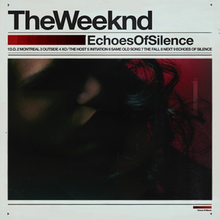
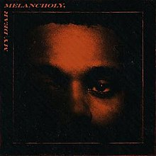

DISCOGRAPHY
Albums
 Kissland is the debut studio album. It was released on September 10, 2013, through XO and distributed by Republic Records.
Beauty Behind the Madness was the second studio album. It was released on August 28, 2015, through XO and distributed by Republic Records.
 Starboy is the third studio album It was released on November 25, 2016, through XO and distributed by Republic Records. The album features guest appearances from Daft Punk, Lana Del Rey, Kendrick Lamar, and Future.
Starboy is the third studio album It was released on November 25, 2016, through XO and distributed by Republic Records. The album features guest appearances from Daft Punk, Lana Del Rey, Kendrick Lamar, and Future.
Compilation Albums
 Trilogy is a compilation album. It was released on 13 November 2012 through XO and distributed by Republic Records. It is composed of re-mixed and remastered versions of his 2011 mixtapes House of Balloons, Thursday, and Echoes of Silence, and three previously-unreleased song.
The Weeknd in Japan is the first greatest hits album.It was released, digitally and physically, exclusively in Japan on November 21, 2018, by Universal Music Japan.The album's release occurred shortly before the start of The Weeknd Asia Tour (2018).
Mixtapes
 House of Balloons is the debut mixtape. It was released as a free download on March 21, 2011, then was later released by XO. The mixtape was also released on his official website. Its music incorporates electronic and urban genres, including R&B and soul, along with trip hop, indie rock and dream pop tones.
 Thursday is the second mixtape, independently released on August 18, 2011. It follows his critically acclaimed, Polaris Music Prize-nominated debut mixtape House of Balloons (2011). Its music incorporates downtempo, dubstep, dream pop, hip hop, rock and reggae styles.
 Echoes of Silence is the third mixtape, released on December 21, 2011, by his official website. The release follows his Polaris Music Prize-nominated debut release House of Balloons and his second mixtape Thursday,both released earlier the same year.
Extended Plays
 My Dear Melancholy is the first extended play (EP). It has been referred to alternatively as an album and a mini-album, with the project's liner notes simply describing it as an "official studio recording". It was released on March 30, 2018, through XO and distributed by Republic Records.